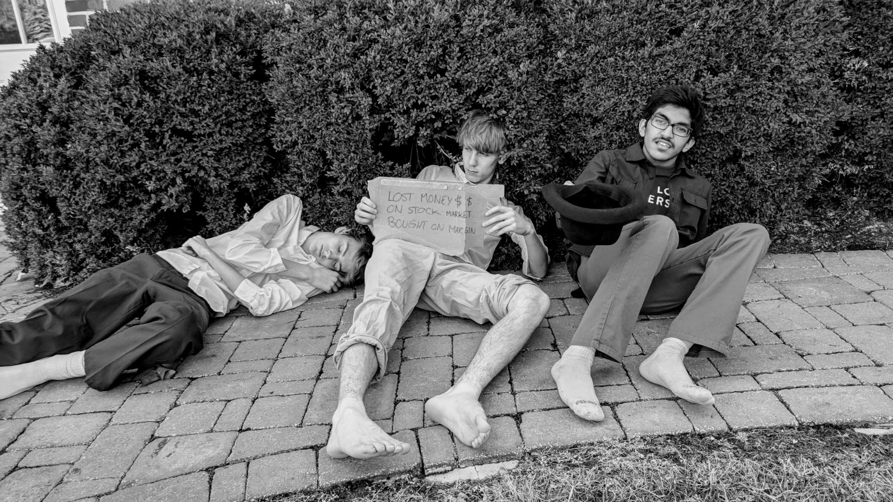
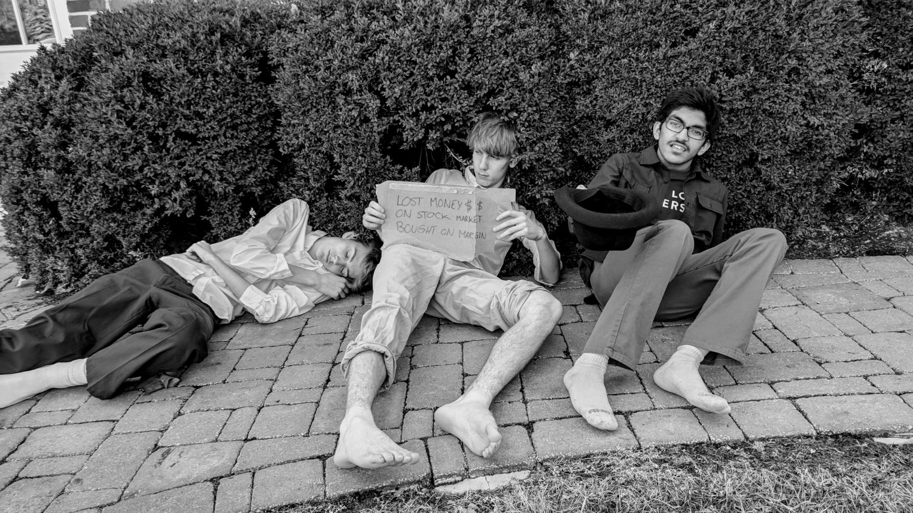

"Rich Investors"

3 men who stuck gold on the United States stock market by buying on margin. (crica 1927)
3 men who stuck gold on the United States stock market by buying on margin. (crica 1927)
"Wall St."
3 stock brokers outside Wall St. on their way to lunch. (circa 1928)
3 stock brokers outside Wall St. on their way to lunch. (circa 1928)
"Lost Cash"
Men who just found their money was lost at the banks. (circa 1929)
Men who just found their money was lost at the banks. (circa 1929)
"Devastated"

Millionaires one day, hobos the next. Men who lost it all on the stocks struggling to survive on the streets. (circa 1930)

Millionaires one day, hobos the next. Men who lost it all on the stocks struggling to survive on the streets. (circa 1930)